Интегральный криптоанализ это метод криптоанализа, основанный на одновременном рассмотрении большого набора открытых текстов со специально подобранными значениями байт в определенной позиции.
Он использует свойства некоторых распространенных операций, применяемых в блочных шифрах, которые при изменении значений каждого открытого текста не изменяют значения суммы байт в определенной позиции этих текстов. Такими свойствами обладают операции «исключающее или», подстановки, операции сложения по модулю и др.
Интегральный криптоанализ имеет ряд важных особенностей. Он особенно хорошо подходит для шифров с только биективными элементами. Интегральный криптоанализ применим для ряда шифров не подверженных дифференциальному криптоанализу, и иногда он показывает лучшие результаты, чем линейный криптоанализ. Впервые он был использован для криптоанализа алгоритма «SQUARE» и предназначался только для алгоритмов с одноименной архитектурой, но впоследствии он был использован также для атаки на шифры с архитектурой Фейстеля. Фактически это универсальный инструмент, который с тем или иным успехом может быть применен к большинству блочных алгоритмов шифрования. Существует также расширение интегрального криптоанализа – интегральный криптоанализ высших порядков, использующий несколько активных байт в интегральной модели алгоритма.
Пусть 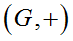будет конечной абелевой группой порядка k. Рассмотрим производную группу 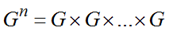, т. е. группа содержит элементы формы 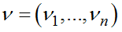, где 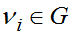. Операция сложения для 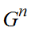определена как покомпонентная, т. е. 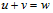предполагает, что 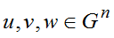и 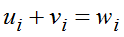для всех i. Пусть S – используемый набор открытых текстов. При проведении криптоанализа в качестве интегрального показателя используется формула
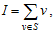 |
(3.1) |
где сумма определена в контексте групповой операции для .
В интегральном криптоанализе n будет представлять число слов в открытом тексте и шифртексте, и m будет обозначать количество открытых текстов и шифртекстов рассматриваемых одновременно. Обычно m=k, где k – это порядок группы G, т. е. 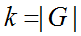, вектор 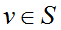представляет открытый текст и шифртекст. Интегральный криптоанализ основан на том, что в ряде случаев существует возможность предсказать значение интегрального показателя после определенного количества раундов шифрования.
Группой называется множество элементов, на котором задана групповая операция, удовлетворяющая следующим аксиомам:
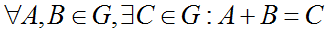
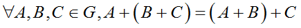
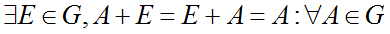
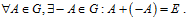
Группа называется Абелевой если: 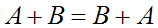.
Для проведения ИК используются наборы открытых текстов следующего вида:
1) все i-е слова одинаковы;
2) все являются различными;
3) сумма байт в определенной позиции известна заранее.
Поиск ключевых байт основан на построении интегральной модели (или интеграла) в которой, с некоторой вероятностью, возможно предсказание показателя I в заданной позиции для всех текстов, используемых в анализе.
Для построения интеграла используются следующие символы:
1) символ "С" (constant);
2) символ "A" (all);
3) символ "S" (Sum);
4) символ "?" (Unknown).
Пример интеграла для трехраундовой урезанной версии блочного шифра Square приведен на рис. 3.40.
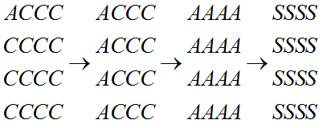 |
Рис. 3.40. Пример интеграла урезанной версии блочного шифра Square |
Устойчивость к интегральному криптоанализу во многом определяется свойствами линейного преобразования. Важной характеристикой линейного преобразования является количество байтовых ветвлений. Число байтовых ветвлений 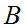 линейного преобразования 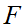 определяется как
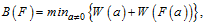 |
(3.2) |
где 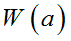– это байтовый вес Хэмминга вектора а (т. е. количество ненулевых байтов в а).
Если число байтовых ветвлений исследуемого линейного преобразования невелико 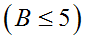, то это говорит о слабой рассеивающей способности примитива. В таком случае алгоритм может оказаться неустойчивым к интегральному криптоанализу на таком количестве раундов, пока криптографические свойства используемых нелинейных компонентов и добавлений подключа не компенсируют слабых рассеивающих свойств операции линейного преобразования.
Как и другие вероятностные методы криптоанализа, интегральный криптоанализ. скорее является средством доказательства криптостойкости, чем инструментом практического взлома. Это связано с тем, что он, как правило, неприменим к полному количеству раундов алгоритма, а работает на версии, в которой количество раундов является урезанным.